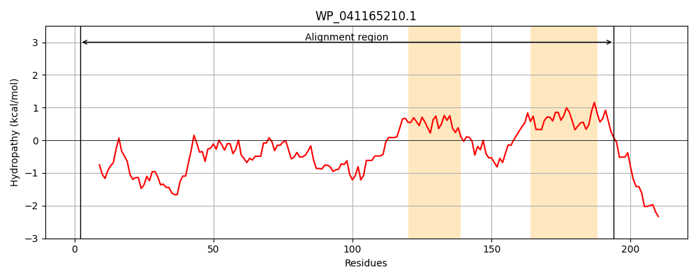
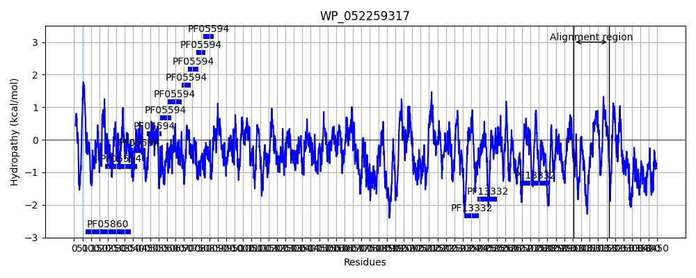
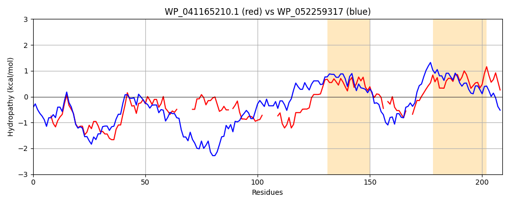

Hit Accession: WP_052259317
Hit TCID: 1.C.75.1.2
Hit Description: gnl|BL_ORD_ID|21195 gnl|TC-DB|WP_052259317|1.C.75.1.2 hemagglutinin repeat-containing protein [Pantoea agglomerans]
Mach Len: 209
e:0.000000
Query TMS Count : 2
Hit TMS Count: 1
TMS-Overlap Score: 0.000000
Predicted Substrates:CHEBI:25367;molecule
BLAST Alignment:
Score: 368 , Bit scores: 146 bits, E-value: 2.5e-40, Alignment length: 209, Percentage identity: 44
Query: 2 ASQQQDVTGLSRDAAHANQTLSPIFDQEKEQNRLATAQKTGEIGRQVSDVLVTQGKLNAQAAQSD------PAARAAARAKLVAGGNG-SPSEEQISAQVSRT------ATADYDTGGKYQKVAQAVTAAMQGLAGGNLAQAASGAVSPYVAEIIHS-QTTDSATGK--VNVETNAMAHAVWGAIAAASGNNSALAGAAGAVSGELLGR 194
A Q Q+V+ LSRDAA AN L IFD++KEQ R+ TAQ EIG Q D+ TQG++ A A ++ P + A A+ G P+ I+ QV +T TGG Q+ A TAA+QGLAGGN+AQA SGA +PY+AE IH TT GK VNV+ N +AHAV GA+ + + N ALAGA+GA GE + +
Sbjct: 2956 AKQTQNVSALSRDAAGANPGLDKIFDKDKEQRRMETAQLLAEIGSQAGDIARTQGEIAATRAATEKMKNISPDQKKDAEAQWRKANPGQEPTAADITGQVYQTLYNREMLAGGMGTGGSVQQGISAATAAIQGLAGGNIAQAVSGAAAPYLAEQIHKLTTTKGPDGKEVVNVQANLIAHAVVGAVTSYASGNPALAGASGAAMGEYIAQ 3164 | Protein Hydropathy Plots: |
|---|
|  |  |
Pairwise Alignment-Hydropathy Plot:
|
|---|
|  |